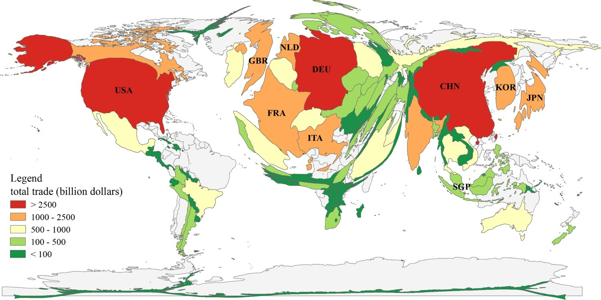

الأدفاق التجارية العالمية
مقدمة
تجسد الأدفاق التجارية إلى جانب بقية الأدفاق (سياحية – مالية – إعلامية) ترابط المجال العالمي، وذلك نتيجة لتناميها بنسق سريع منذ تسعينات القرن العشرين. فما هي مظاهر نمو الأدفاق التجارية وما هي عوامله؟ من هي الأطراف المتدخلة؟ وما هي خصائص جغرافية وتركيبة المبادلات التجارية العالمية؟
III جغرافية وبنية الأدفاق التجارية
1. تدفقات تجارية غير متكافئة كمياً
أ. هيمنة بلدان الشمال
تستأثر بلدان الشمال بأكثر من نصف صادرات السلع (56.4% سنة 2024) وأكثر من ثلثي صادرات الخدمات التجارية العالمية (68% سنة 2024)، ويبرز ضمنها:
- الثالوث: (الولايات المتحدة الأمريكية – اليابان – الاتحاد الأوروبي) يساهم بخمسي مبادلات السلع في العالم سنة 2024 ويوفر أيضاً أكثر من نصف مبادلات الخدمات في العالم. ويبرز ضمنه الاتحاد الأوروبي الذي يستأثر بثلث الصادرات العالمية للسلع والخدمات التجارية.
- البلدان العشرة الأولى: تساهم بأكثر من نصف المبادلات التجارية العالمية، توجد ضمنها 7 دول متقدمة تتصدرها الولايات المتحدة الأمريكية التي تعتبر أول مورد للسلع في العالم بنسبة 13.1% سنة 2023 وثاني مصدر للسلع في العالم بنسبة 8.5% سنة 2023، كما تعتبر أيضاً أول مصدر ومورد للخدمات في العالم.
تفسر هيمنة بلدان الشمال على الأدفاق التجارية العالمية بعدة عوامل:
- ضخامة طاقتها الإنتاجية.
- امتلاكها لعدد كبير من الشركات عبر القطرية.
- اندماجها ضمن اتحادات اقتصادية ومناطق تبادل حر.
ب. مكانة متنامية للجنوب لكنها متباينة ومحدودة
تدفقات تجارية متناهية: تنامت حصة بلدان الجنوب بنسق سريع من المبادلات التجارية العالمية فارتفعت من قرابة الثلث سنة 1980 إلى أكثر من خمسي الصادرات العالمية للسلع سنة 2024 (43.%) وإلى قرابة ثلث الصادرات العالمية للخدمات التجارية (32%)، وتبرز ضمنها الصين التي تعتبر أول مصدر للسلع في العالم (14.2% سنة 2023) وهي تنتمي إلى البلدان العشرة الأولى إلى جانب كوريا الجنوبية وهونغ كونغ والمكسيك.
يفسر النمو بـ:
- نجاعة السياسات التنموية في بعض البلدان النامية.
- الاستفادة من إعادة التوطين الصناعي للشركات عبر القطرية.
- وفرة الثروات الطاقية (كالخليج العربي) والمنجمية مما دعم حصتها في صادرات السلع.
مساهمة متباينة: تقدر حصة أفريقيا من الأدفاق التجارية العالمية دون 3% كما تبلغ حصة أمريكا اللاتينية في حدود 6%، في المقابل ترتفع حصة آسيا إلى أكثر من ثلث صادرات السلع في العالم سنة 2023 إضافة لهيمنتها على أربعة أخماس إجمالي مبادلات السلع لدول الجنوب، وتبرز ضمنها الصين والتنينات الآسيوية والنمور الآسيوية.
ضعف اندماج الجنوب في النظام التجاري العالمي: تشكو بلدان الجنوب من ضعف حصتها من تدفقات الخدمات التجارية العالمية (32%) سنة 2024، كما تشكو من شدة الارتباط ببلدان الشمال ومن ضعف المبادلات البينية جنوب – جنوب التي لا تمثل سوى ربع إجمالي المبادلات العالمية للسلع (24.6% سنة 2022).
يفسر ضعف اندماج الجنوب بـ:
- ضعف الطاقة الإنتاجية نتيجة لغياب هياكل إنتاج قوية.
- هشاشة البنى التحتية وضعف التمويل.
- عبء الديون إلى جانب عدم نجاعة الاتحادات الإقليمية.
- هيمنة بلدان الشمال وشركاتها عبر القطرية على النظام التجاري العالمي وإغراقها للأسواق بمنتوجاتها المدعومة.
2. بنية تدفقات غير متكافئة
أ. بلدان الشمال: تركيبة مبادلات تعكس القوة الاقتصادية
- هيمنة المنتجات المعملية: تهيمن هذه المنتجات على نسب هامة من صادرات السلع تتراوح بين 71% و79% كما تمثل ثلثي واردات السلع. تساهم بلدان الشمال بـ 60% من المبادلات العالمية من المنتجات الصناعية سنة 2019، ويتكون نصف المنتجات المصدرة خاصة من منتجات التكنولوجيا العالية ذات قيمة مضافة عالية (آلات – تجهيزات النقل – أدوية…) نظراً لعراقة التصنيع وتحكم شركاتها عبر القطرية في التكنولوجيا.
- أهمية المنتجات الفلاحية: تهيمن بلدان الشمال على ثلثي المبادلات العالمية للمنتوجات الفلاحية.
- أهمية الخدمات التجارية: تمثل ربع تدفقاتها التجارية وتتكون من الخدمات العالية (إعلام – اتصال – تأمين – الاستشارة والهندسة…) نظراً لثلوثة الاقتصاد.
ب. بلدان الجنوب: تركيبة مبادلات تعكس التأخر الاقتصادي وتكرس التبعية
- المنتجات المعملية: ارتفعت حصة البلدان النامية من صادرات المنتجات المعملية العالمية وصارت تمثل ثلثي صادرات الجنوب، ولكن تبقى منتجات ذات قيمة مضافة ضعيفة أو متوسطة، ويرتبط نموها بتوطن فروع الشركات عبر القطرية التابعة لبلدان الشمال ببلدان الجنوب. يتركز النمو ببلدان آسيا خاصة الصين والنمور والتنينات الآسيوية التي تتميز بارتفاع حصة المنتجات المعملية إلى أكثر من 71% من صادراتها بسبب اعتمادها سياسة التصنيع الحاث على التصدير. من ناحية أخرى تشكو بلدان الجنوب من ارتفاع حصة واردات المنتجات المعملية التي تمثل ثلاثة أرباع واردات السلع خاصة متاع التجهيز ومنتجات التكنولوجيا العالية.
- المحروقات: تساهم البلدان النامية بأكثر من نصف المبادلات العالمية من المحروقات، وتحتل أفريقيا المرتبة الأولى (أكثر من 40% من صادراتها).
- المنتجات الفلاحية: تعتبر من أهم المنتجات المصدرة في أفريقيا وأمريكا اللاتينية، وهي تواجه صعوبة النفاذ إلى الأسواق العالمية بالإضافة إلى تبعيتها تجاه بورصات بلدان الشمال التي تتحكم في الأسعار. من ناحية أخرى تشكو معظم بلدان الجنوب من التبعية الغذائية.
- ضعف المساهمة في تدفقات الخدمات التجارية العالمية: تساهم بلدان الجنوب بـ 32% من صادرات الخدمات العالمية وهي تتركز في قارة آسيا.
خاتمة
تكرس الأدفاق التجارية ترابط المجال العالمي، لكنها تجسد عدم التكافؤ وتدعم هيمنة الشمال وشركاته عبر القطرية على الاقتصاد العالمي.
📖 تعريفات
🏢 منظمات ومؤسسات
- الشركات عبر القطرية: شركة كبرى تمارس أنشطتها مباشرة أو عن طريق فروعها في الخارج مع الحفاظ على مقرها الاجتماعي في بلدها الأصلي، تسعى للاستفادة من فوارق كلفة الإنتاج وتجزئة مراحل الإنتاج.
📌 مصطلحات أخرى
- التصنيع الحاث على التصدير: سياسة تنموية اعتمدتها بلدان الجنوب تقوم على توجيه الصناعات نحو الأسواق الخارجية لتحقيق النمو.
🗺️ خرائط ومعطيات مصورة
